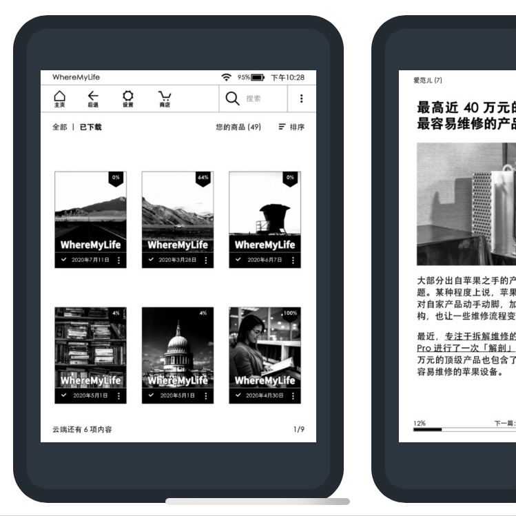

benn博客
首页
文章
Projects
RSS
欢迎来到我的博客
近期文章
查看更多
8月24日
Wire：Go最优雅的依赖注入工具
3月21日
Sentry 高并发时上报异常的问题排查
2月14日
深入讨论几种 ES Mapping 修改方法和局限
我的作品
Newc
一个命令行工具，用来自动生成 Go 结构体的构造器代码
即刻镇广播(DEMO)
不算作品，只是开发了两个晚上的“玩具项目”，但出乎意外的有趣～
Prray
一个 JavaScript/TypeScript 工具库，提供 “Promisified Array” 的基础工具

WhereMyLife
一个在线服务，用来给 Kindle 订阅 RSS，可以定时收到像报纸杂志一样的文章合集
WhereMyLife Blog
这里记录了 WhereMyLife 的前世今生和更新记录
NodeSpider
一个 Node.js 爬虫框架，当时我花了太多时间在这上面……
智子计算器
远古早期作品，在大学寝室开发的高级计算器App，特点是支持矩阵计算